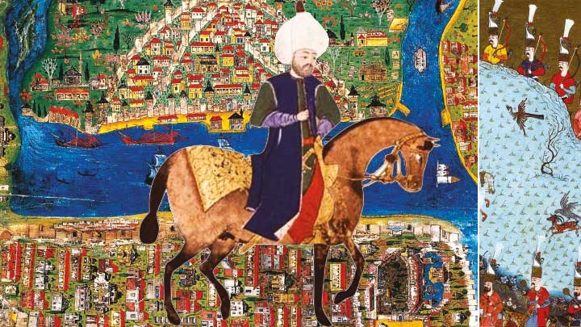
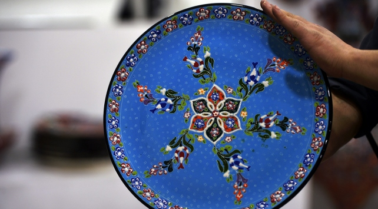
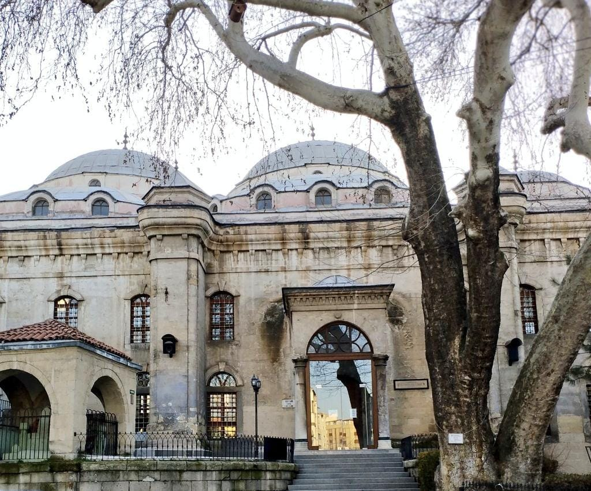

Yerleşim tarihi itibariyle 7 bin yıllık bir geçmişe sahip olan Kütahya İli, topraklarında barındırdığı
uygarlıklara ait çok zengin
bir kültürel mirasın da sahibidir.Sanat değeri yüksek kaliteli seramikleriyle ünlü Hititlerin, barışçı bir
toplum oldukları, müzisyen
ve sanatçıları korudukları bilinen Friglerin, heykeltraşlıklarıyla ünlü Roma ve Bizanslıların, anıtsal mimaride
ileri gitmiş, edibi, şairi,
mutasavvıfı bol Selçuklu, Germiyanlı ve Osmanlıların birikimini yansıtan Kütahya, tarihinin her devresinde
önemli bir ilim ve kültür merkezi
olagelmiştir.Antik kaynakların, masalcı Ezop''un doğum yeri olarak gösterdiği Kütahya, Germiyanoğulları
Devletinin başkenti, Anadolu Beylerbeyliğinin
merkezi ve şehzadelerin valilik yaptığı kent olarak Osmanlı tahtının staj yerlerinden biridir.Ünlü gezgin ve
edebiyatçı Evliya Çelebi''nin de memleketi
olan Kütahya, Osmanlı sarayına gelin verdiği Devlet Hatun''un sürekli himayesini görmüş, Kütahya''dan yetişen
çok sayıda bilim adamı ve sanatkar şehzadelere
öğretmenlik yapmıştır. Bu durum, saray kültürünün Kütahya''da da yaşanmasını sağlamıştır. Kütahya, her alanda
yetiştirdiği insanlarla Anadolu kültürüne
büyük hizmetlerde bulunmuştur. Kütahyalı, tarih boyunca iyinin, güzelin, doğrunun yanında olmuş, insani
değerleri korumuş, çelebilik mevkiine taşımıştır.
Evliya Çelebi'nin Kütahyalı olduğunu biliyor muydunuz?
Evliya Çelebi Seyahatname'sinde Kütahya'dan bahsederken
''Kütahya'nın havası ve suyu güzeldir, fincanı çeşitli maşrapa ve testileri,
çanak ve tabakları hiçbir yerde yoktur. Şehrin içinde binden fazla kayalardan akan buz
gibi suları vardır. Mahbup ve mahbubesi, alim ve fadılları çoktur.” diye tanımlamıştır.

Kütahya'da Çinicilik
Kütahya’ nın sembolü olan ve onu bütün dünyaya tanıtan çinicilik,
önemli bir sanat kolu olmanın yanı sıra, Kütahya’ da aynı zamanda bir geçim kapısıdır.
Geçmişi Friglere kadar uzanan seramik yapımı zaman içinde sürekli gelişme göstermiştir.
Kütahya' da seramik sanatı 14.yy. 'ın son yarısında kırmızı hamurlu malzeme ile başlamıştır.
Motifleri ve renkleri o dönemin İznik çinileri ile benzerlik göstermektedir.

Kütahya Ulu Camii
Mimar Sinan'ın elinin de değdiği yapı, son şeklini 2. Abdülhamid döneminde gerçekleştirilen onarım sırasında almış
Ulu camilerin genel karakteristiği gereği bu caminin ortasında da bir şadırvan var.
Ahşap tavanlı müezzin mahfili şadırvanın üzerine altı küçük sütuna oturtulmuş.
İç mekânın arka kısmının üstü boydan boya mahfillerle çevrilmiş. Cami içinde hat levhaları ve kalem
işleri yoğun bir şekilde kullanılmış olmasına rağmen, dağılışları göze batmayacak şekilde, dengeli bir süsleme oluşturulmuş.

Tavşanlı Leblebisi
Kütahya'nın Tavşanlı ilçesinde, yılda ortalama 15 bin ton üretilen,
uluslararası ödüle sahip, coğrafi işaret ve marka tescilli leblebinin 4 bin tonu ihraç ediliyor.
Baharat, şeker ve çikolata ile tatlandırarak karamellisinden karanfillisine, sakızlısından,
kahvelisine, tarçınlı, limonlu ve acılısına kadar leblebinin 43 çeşidini yapan Tavşanlılı üreticiler,
"yarım çeşit" olarak nitelendirdikleri kırık leblebiyle birlikte 43,5 çeşit leblebi ürettiklerini söylüyor.